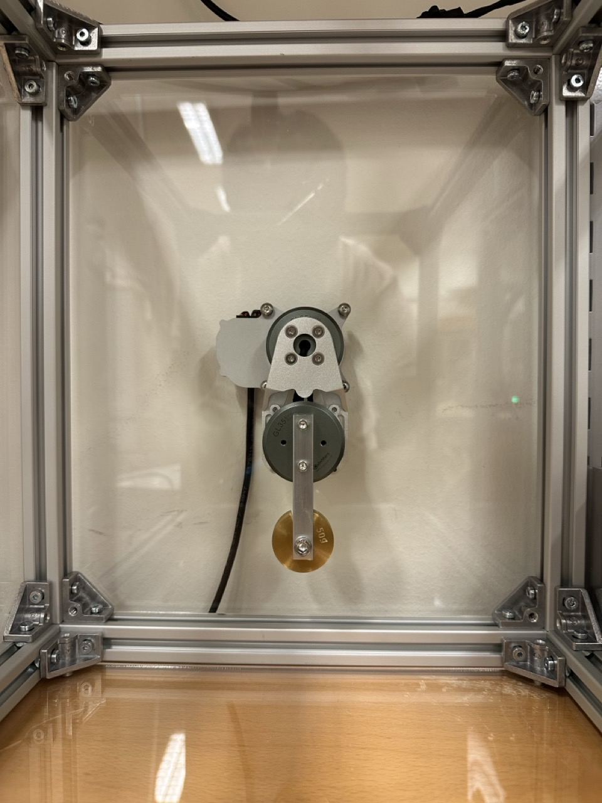

Shivesh Kumar ↗
Chalmers University of Technology
A euROBIN scientific workshop
A hands-on introduction to CloudPendulum for teaching and research, with applications in optimal control and reinforcement learning.
All backgrounds welcome. Places are limited.

CloudPendulum is an initiative at Chalmers University of Technology developing canonical underactuated robotic systems, including simple and double pendulums. These desk-sized systems provide high-frequency position, velocity, and torque control. A cloud service provides 24/7 access to multiple platforms.
Participants will work with the physical hardware and its cloud-based counterparts. Hands-on sessions cover optimal control and reinforcement learning, from simulation to real robots, both locally and through the cloud.
CloudPendulum documentation ↗Chalmers University of Technology
University of Patras
DFKI
Tentative schedule · All times CET (UTC+1)
Tuesday · November 2026
Shivesh Kumar · Chalmers University of Technology
Registration on the CloudPendulum platform
Wednesday · November 2026
Konstantinos Chatzilygeroudis · University of Patras
Dr. Shubham Vyas · DFKI
Continuation of practicals for in-person participants.
Hands-on sessions include optimal control and reinforcement learning on real hardware.
Centre Inria de l’Université de Lorraine ↗
Bâtiment Ada LovelaceROOM C103 · Bertrand Schwartz
Get directions on Google Maps ↗Remote participation is available through the workshop videoconference.
Join the videoconference24–25 November · Programme times are in CET.
Sponsored by euROBIN
euROBIN is a European network of excellence in robotics supporting collaboration between research institutions.
About the project ↗The workshop is open to everyone, regardless of background or level of expertise.
Places are limited and allocated on a
first-come, first-served basis.